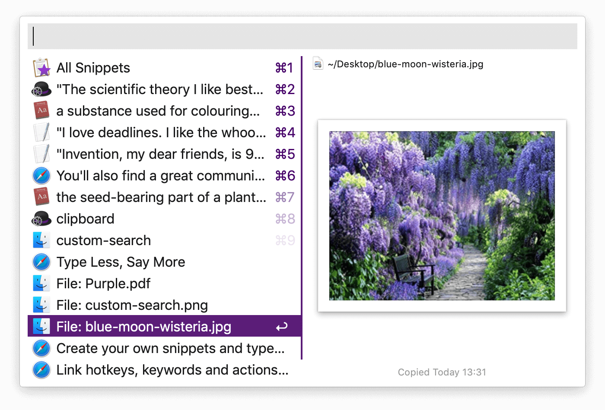
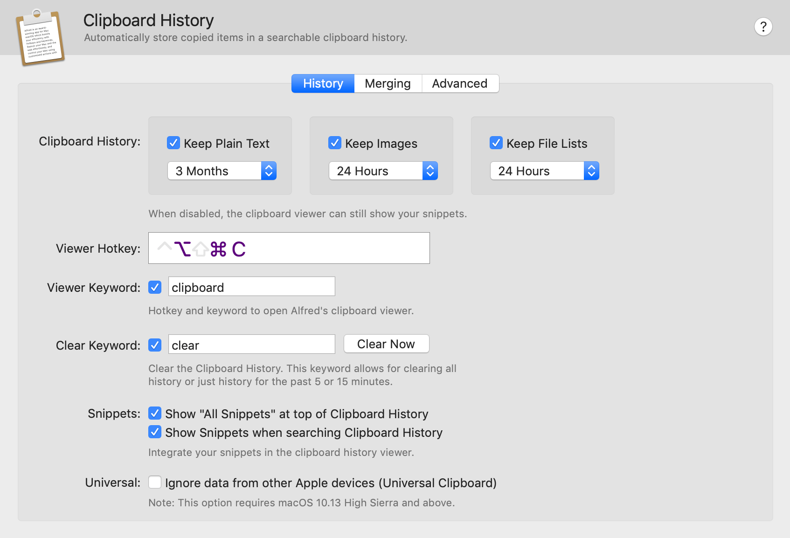
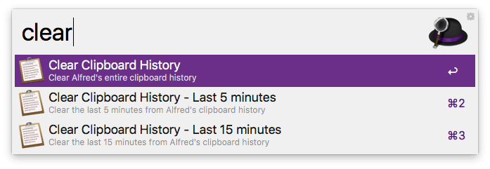
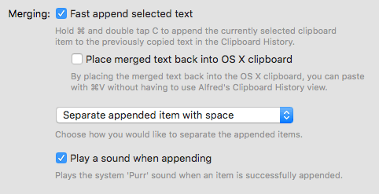
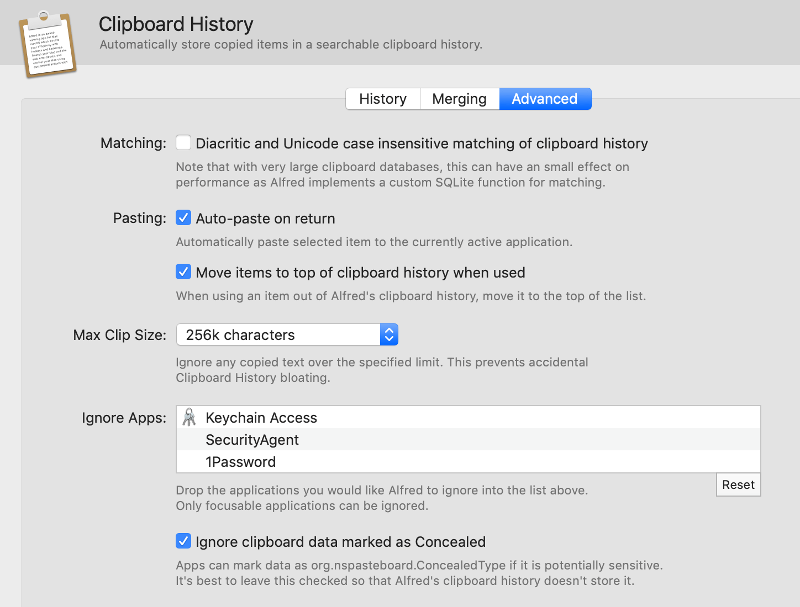

Clipboard History
The Clipboard History feature, part of the Powerpack, is an incredibly useful tool to help you be more efficient.

With Alfred's Clipboard History, you don't need to worry about text, images and file links you've copied but forgot to paste earlier; It's all there in your searchable history.
Need to save your most-used text snippets for easy access? Take a look at the fantastic Snippets feature, which now includes automatic text expansion.
Discover how to make the most of Clipboard History:
- Clipboard History
- Saving Text Clips as Snippets
- Clipboard Merging
- Advanced Settings
- Clipboard Troubleshooting
Using Clipboard History
By default the Clipboard is disabled for privacy reasons. Before you can start using the Clipboard History feature, you need to enable it in Alfred's Preferences, under Features > Clipboard, and grant Alfred Accessibility permissions in macOS.
Activate the Clipboard History for the history types you want to use by checking the box next to the relevant types. Choose from the dropdown menu how long you want Alfred to remember your clips for; 24 hours, 7 days, 1 month or 3 months.
When you pop up the Clipboard History viewer using your hotkey, Alfred will show the clips you've copied, which you can scroll through. To filter your results, start typing any word or phrase from the original clip you copied to see matching results.
You can customise the hotkey and keyword used to show the Clipboard History viewer.

You can clear your entire clipboard history by typing "clear" in Alfred's main search box and choosing whether you want to erase the last 5 minutes, 15 minutes or all of Alfred's history.
Alternatively, you can clear single items with Fn (Function key) + Delete (backspace key).

Saving Text Clips as Snippets
Use the Cmd + S hotkey in the Clipboard History viewer to save a text clip from the clipboard as a snippet.
Take a look at the Snippets feature page for information on saving text clips in a more permanent way, and using automatic text expansion to quickly replace a typed keyword with the full text snippet.
Using Clipboard Merging
When Merging is active in your Powerpack preferences (under Features > Clipboard > Merging), hold Cmd and double-tap C (Cmd + C + C) quickly to append the currently selected clipboard item to the previously copied text in Clipboard History.
You'll hear the macOS "Purr" sound to confirm the item has been successfully appended.

Clipboard Advanced Settings
In the Clipboard Advanced preferences, you'll find additional settings to tweak how you want your clipboard to behave.

You can choose whether you want Alfred to auto-paste to the currently active application. Pasting on Return is active by default.
You can also set a maximum clip size if you frequently copy very large bodies of text. Alfred will then ignore any copied text over the specified limit to prevent accidental Clipboard History bloating.
By default, Alfred ignores popular password applications like the macOS Keychain Access and 1Password, so that you don't inadvertently copy a password to your clipboard. You can add more applications you want Alfred to ignore by dragging them into the Ignore Apps box. As a result, Alfred will not add any text copied in these apps into your history.
By default, Alfred ignores clipboard data marked as Concealed, such as fields where the characters are obscured as you type, but you can choose to store these.
Troubleshooting the clipboard
If you're having any issues with Clipboard History, such as your clipboard not saving clips, the first step is to type "clear" into Alfred and select the "Clear Clipboard History" option. This will clear and rebuild your Clipboard database, allowing you to start from fresh. Once you've done this, copy a new text snippet and see whether it's being copied correctly.
Take a look at the Clipboard History troubleshooting page for further information on troubleshooting the Clipboard History feature.